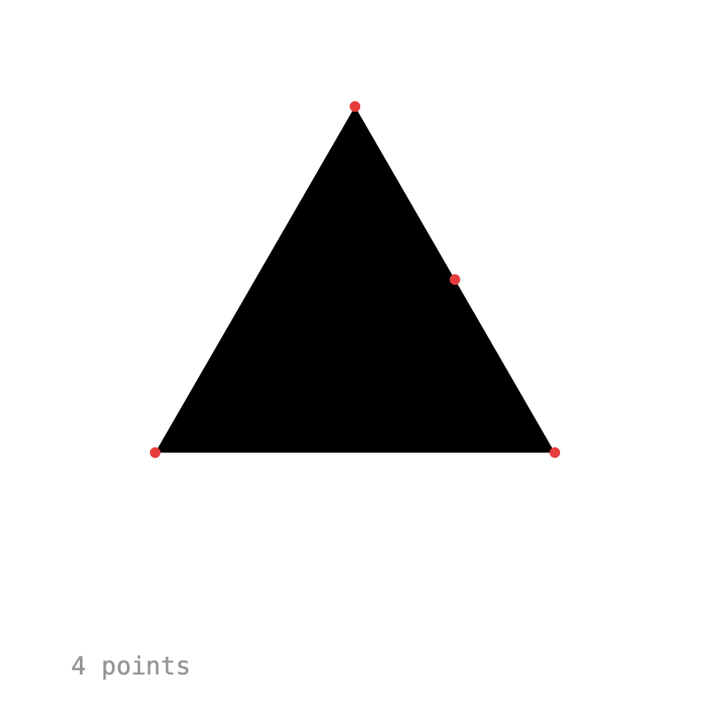

Keyed¶
Keyframe animation for Processing.
Keyed brings keyframes to your sketches. Set a value at a few points in time, and Keyed blends everything in between, with easing, paths, effects and events.

import ch.domizai.keyed.*;
Keyed<Float> x;
void setup() {
size(400, 400);
Keyed.init(this).setDuration(2);
x = Keyed.of(0f)
.key(0, 50f)
.key(1, 350f)
.key(2, 50f);
}
void draw() {
background(255);
circle(x.value(), height / 2, 40);
}
Features¶
- Any type: floats, ints, colors,
PVector,String,boolean, quaternions, shapes, or your own classes. - Easing: After Effects style influence, the usual presets, CSS-like
cubicBezier(), steps, or any function. - Timelines: loop, play once, pause, scrub, change speed, play backwards, or run several clocks side by side.
- Events: markers and loop/finish callbacks.
- Binding: let Keyed write animated values straight into your fields.
- Paths: move along Béziers, splines and chained curves, in 2D or 3D.
- Effects: wiggle, orbit, spring, lag, stop motion, grid snap, motion trails, or your own.
- Export: frame-exact timing for
saveFrame().
Tutorial¶
The tutorial follows the examples that come with the library (File > Examples > Contributed Libraries > Keyed). Each chapter builds on the previous one.
- Getting Started: your first keys, vectors and other value types.
- Easing: shape the motion between keys.
- Timelines: control playback, scrub and retime.
- Events: react to points in time.
- Binding: animate fields without calling
value(). - Paths: move along curves.
- Effects: add motion on top of the keys.
- Types: blend anything, including your own classes.
- Composition: reusable, self-contained animations.
- Export: save evenly timed frames for video.
Looking for a quick summary instead? See the API Overview.